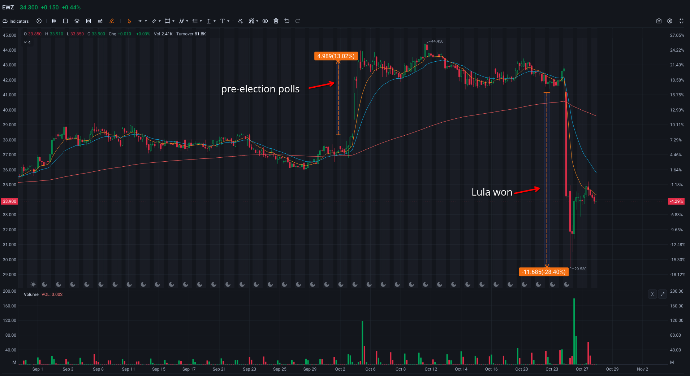
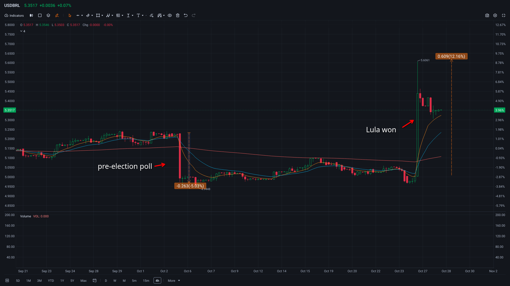
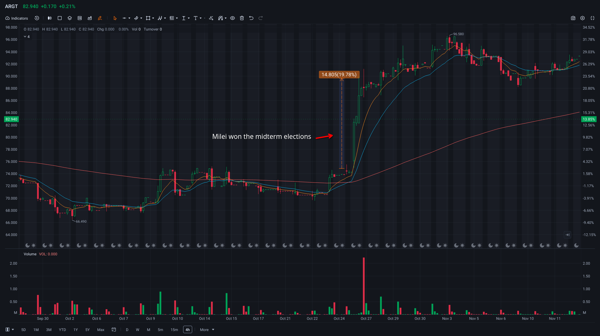
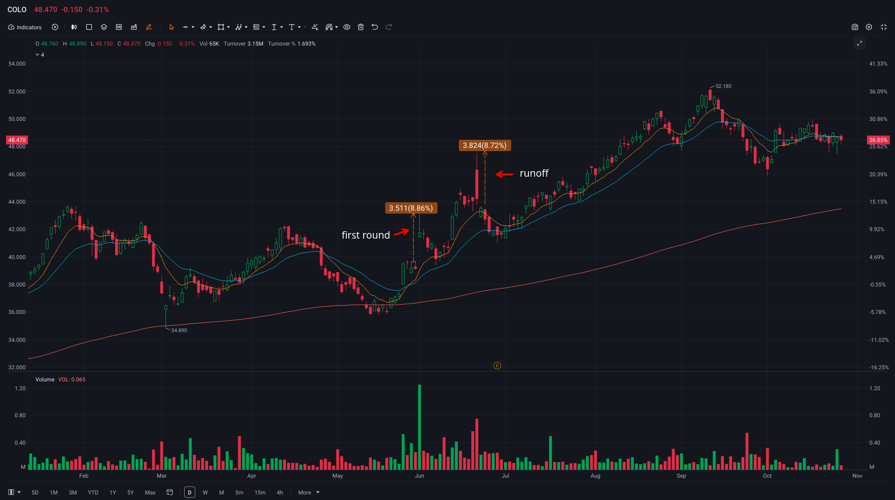
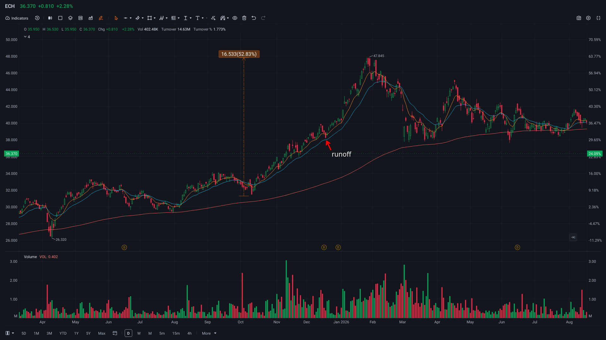
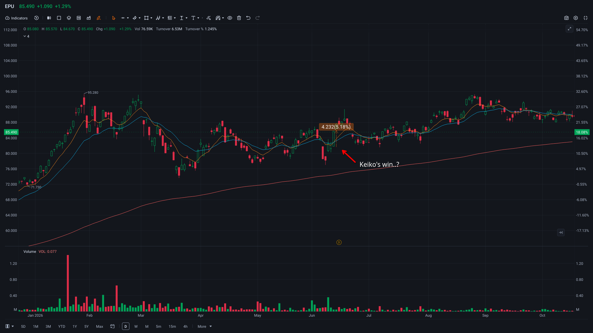

Thought on South American rigged Elections and Stock market.
Om Octorber 25,2026, Luiz Inácio Lula da Silva won Brazil’s presidential runoff against Senator Flávio Bolsonaro (the son of former president Jair Bolsonaro), with about 51.8% of the vote to 48.2%. Market reacted sharply when trading resumed on Monday, Octorber 26. The Brazil index, iShares MSCI Brazil ETF (EWZ) fell about 28% and the real, brazilian currecny lost about 12% against US dollar. This is the bigggest fall since 2020.


what was behind it ??
Market had priced in a Bolsonaro win (everything priced in…). In the first round October 4, Bolsonaro beat the polls, taking 47.0% against Lula’s 45.2%. On October 5, EWZ jumped about 13%.
Investors aka exploiters saw Bolsonaro’s platform as prommising fiscal dicipline and pro-market reform, which means a traitor. In contrast, They feared that under Lula, the budget deficit and pulic debt would keep growing. Brazil’s policy rate was already 13.75% and a Lula win meant hopes for further rate cuts would fade.
Investors also expected a Bolsonaro win beacause of a regional pattern and Bolsonarismo, a right-wing populist movement like MAGA. Actually,pro-American candidates had recently won in Argentina, Chile, Colombia, and, Peru.
I sincerely suspect that CIA or some other American powers are supporting them to win. All they want is to exploit the capital of the South American countiries.
A Lula’s win showed that this pattern is not a rule.
I examined the relationship between the stock market and elections in the following countries: Colombia, Argentina, Chile and Peru, where the pro-Trump right wing patry won. Concerning Chile and Peru, I could not see any huge movement caused by the election compared with the other countries.
Argentina
Javier Milei,self-described libertarian who is close to Donald Trump (worse than Trump..), was first elected in 2023. Milei’s policy is to reduce national spending, and he has cut public spending sharply. This is making Argentina poorer as wages and jobs fall behind prices. His party won the midterms on October 26,2025. The next day, The Market Index ARGT rose about 20%.

Colombia
Abelardo Gabriel de la Espriella, right-wing outsider backed by Trump, won the June 21, 2026 runoff with 49.66% agoint Cepeda’s 48,70. He pleadged to cut the budget deficit, reopen oil exploration and allow fracking. After his first-round lead on May 31, The index COLO rose about 8% in one day.

Chile
Jose Antonio Kast, pro-America, won the December 14, 2025 runoff with 58.18%. His win was largely expected, and the stock market was already highs.

Peru
Keiko Fujimori,pro-America, won the June 7, 2026 runoff (50.135% to 49.865%, is it rigged …?). Peru did not see big moves, but they came during the vote count rather than on the final result. On June 9, as her cahnces improved, the index EPU jumped over 5%.

rigged election…??
This time, Lulca again defeated a Bolsonaro’s son. His father is now in prison. When Bolsonaro lost in 2022, he refused to conced at first and kept alleging fraud in the voting system. This time, his son also demanded a new election, and Tump claimed it was rigged too. It’s ridiculous. Every time the right wing loses, they start ranting and screaming “rigged !!” like sore losers.
Among these countries, only Brazil is not pro-Trump. When pro-American candidates win, as in Argentina and Colombia, the stock market tends to jump. Investors expect these governments to follow Washngton’s wishes and adopt policies that favor foreign bussiness. In other words, they are traitors and will lick the boots of the USA.
Lula’s win over Bolsonalo means that, at least for the next four years, Brazilian people are guaranteed not to be exploited by Washington, not to be bothered by a stupid cunt like Javier Milei and not to see the devastation of the Amazon rainforest reopened.